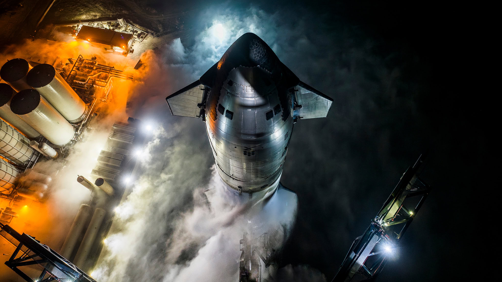
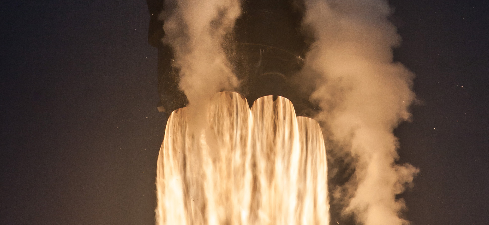
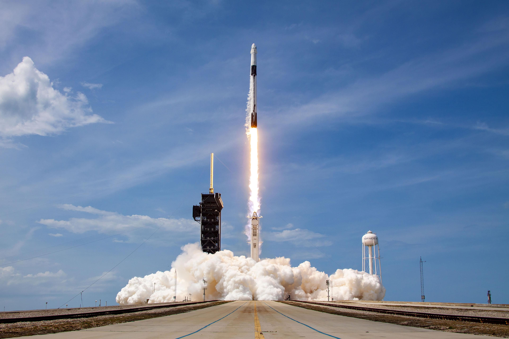
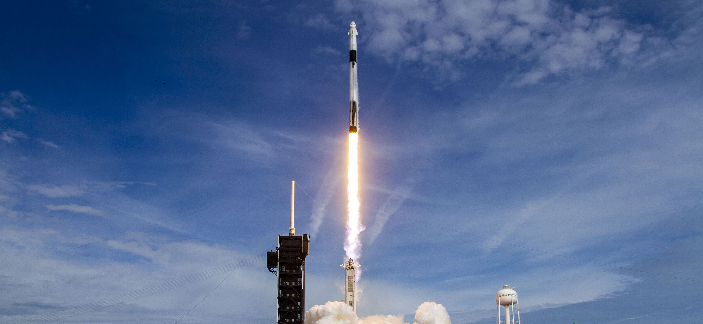

Multiplanetary
官方使命
已核验事实：SpaceX 使用 “Making life multiplanetary” 表述公司使命。火星仍是长期愿景，不应被写成已确定日期的承诺。
长期愿景“Making life multiplanetary”不是页面上的口号终点，而是对运输成本、复用速度与工程闭环提出的一组长期约束。

本页不代替 SpaceX 的官方公司介绍。下列内容以已核验的产品事实为锚点，解释这套使命如何在网站叙事中被转译成工程原则。
已核验事实：SpaceX 使用 “Making life multiplanetary” 表述公司使命。火星仍是长期愿景，不应被写成已确定日期的承诺。
长期愿景
已核验事实：Falcon 9 是可重复使用的两级轨道级火箭；Starship 则是为完全、快速重复使用而设计的系统。后者是设计目标，不等于已经完成。
设计目标
概念站阐释：设计—制造—发射—回收—复盘被呈现为一条反馈路径。它帮助读者理解快速迭代的逻辑，但不是 SpaceX 官方公布的流程定义。
概念阐释
概念站阐释：我们用“垂直整合”概括从运载工具、载人飞船到连接与轨道计算的系统关系；它是本页的组织视角，不冒充官方引语。
系统视角
宏大使命只有经过真实任务才能获得可信度。Falcon 的复用、Dragon 的人员与货物运输，以及持续推进的 Starship 研发，构成今日能力与长期目标之间的证据链。
| Falcon 9 | 在役 / 可重复使用 |
|---|---|
| Dragon | 人员与货物运输 |
| Starship | 为快速重复使用而设计 |
| STARMIND | IN DEVELOPMENT / 正在开发 |
| Mars | 长期愿景 |
One mission. A tighter loop between design, flight and learning.
岗位、新闻与投资者信息会持续变化。以下按钮直接前往 SpaceX 官方入口；本概念站不复制动态职位、新闻数量、发射统计或市场信息。

在官方招聘页面查看当前开放职位、团队与申请要求。
前往官方招聘页面
在 SpaceX 官方网站查看公司更新、任务页面与实时内容。
前往 SpaceX 官网
公司公告、财务披露与投资者相关信息以官方投资者关系网站为准。
前往投资者关系网站
任务日期与状态具有时效性，请通过官方发射页面查看最新安排。
查看官方发射安排